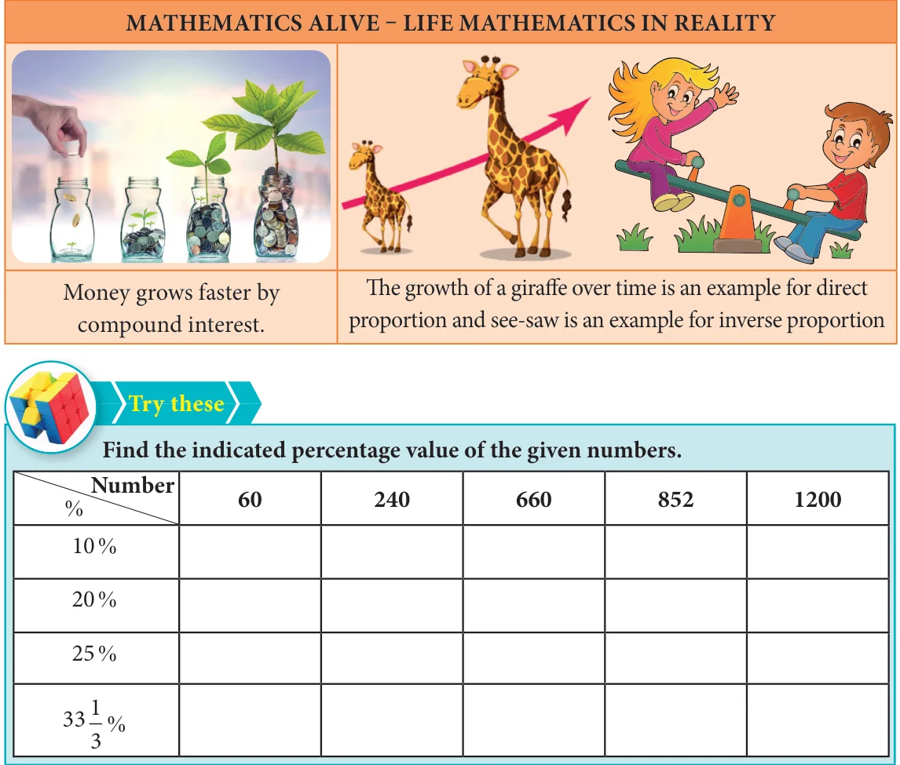

LIFE MATHEMATICS
Learning Objectives
- To recall the concepts of percentage, profit, loss and simple interest.
- To solve problems involving percentage, applications of percentage in profit, loss, overhead expenses, discount and GST.
- To know what compound interest is and to be able to find the compound interest through patterns and formula and use them in simple problems.
- To find the difference between compound interest and simple interest for 2 years and 3 years.
- To recall direct and inverse proportions.
- To know about compound variation and do problems on it.
- To solve time and work problems.
4.1 Introduction
The following conversation happens in a Math class of VIII Std.
Teacher : Dear students, money collection is being made for the Flag Day and so far 32 out of 40 students in VII Std and 42 out of 50 students from our class have contributed. Can anyone of you say, whose contribution is better?
Sankar : Teacher, 32 out of 40 is \(\frac{32}{40}\) and 42 out of 50 is \(\frac{42}{50}\). The corresponding like fractions of them are \(\frac{160}{200}\) and \(\frac{168}{200}\) respectively. So, our class students' contribution is better.
Teacher : Very Good, Sankar. Students, is there any other way to compare?
Bumrah : Yes Teacher, percentages will help. Here, \(\frac{32}{40} = \frac{32}{40} \times 100 = 80\,\%\) and \(\frac{42}{50} = \frac{42}{50} \times 100 = 84\%\) Clearly, our class contribution is 4% more than VII Std.
Teacher : Well done, Bumrah. You are exactly correct. Can anyone of you say where the use of percentages is seen more?
Bhuvi : Yes Teacher. My father told me that percentages are used in the calculation of profit, loss, discount, calculation of tax (eg: GST), interest on investment, growth in population and depreciation of machines and almost everywhere where comparison is made. He also had told me that it is an easy tool which is helpful to compare values.
Teacher : Well said, Bhuvi. These are the topics what we are going to see in this chapter using percentages.
The above conversation leads the way to know the application of percentages in various situations and in the commonly seen problems in our day-to-day life. We will also see direct and inverse proportions, compound variation and time and work problems topics later.
